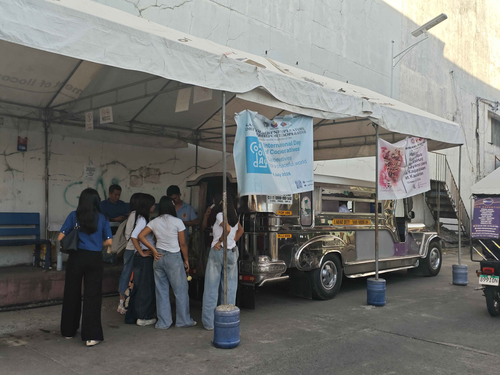

What happens
after 6 PM?
A simple interactive scenario showing how the time of day can affect a commuter's options. This is an illustration, not a live transport tracker.
When the day ends, does the commute?
Imagine finishing school or work after the usual rush. The nearest ride may already have left, the next vehicle may take longer to arrive, and alternative transport may cost more.
Choose a time and commuter situation to explore a fictional example of how availability can change.
Finish your school day or shift.
Check the local route or operator information.
Wait safely in a visible, appropriate place.
Have a backup if your usual option is unavailable.
Illustrative scenario only. Actual transport schedules, fares, waiting times, and vehicle availability vary by route, operator, day, and location.
How much does
the trip add up to?
Use the calculator to estimate commuting expenses. Enter your own fare and travel routine to see the monthly total. Treat the result as a starting point for discussion—not as a measure of what every Filipino spends.
One ride can become many.
A commuter may pay for more than one vehicle per direction. When these costs repeat across school or workdays, the total becomes easier to notice.
Enter your own fare. HATID does not assume a route or official fare.
Example: 2 rides = one ride going out + one ride going home.
Formula: one-way fare × paid rides per day × commuting days. Monthly estimate uses 52 weeks ÷ 12 months.
Spot the barriers.
Select the numbered points in this sample street scene to explore common problems that can affect a commuter's experience.

What makes a stop commuter-friendly?
Explore the four points in the scene. Each one highlights a feature that can make public transport easier and safer to use.